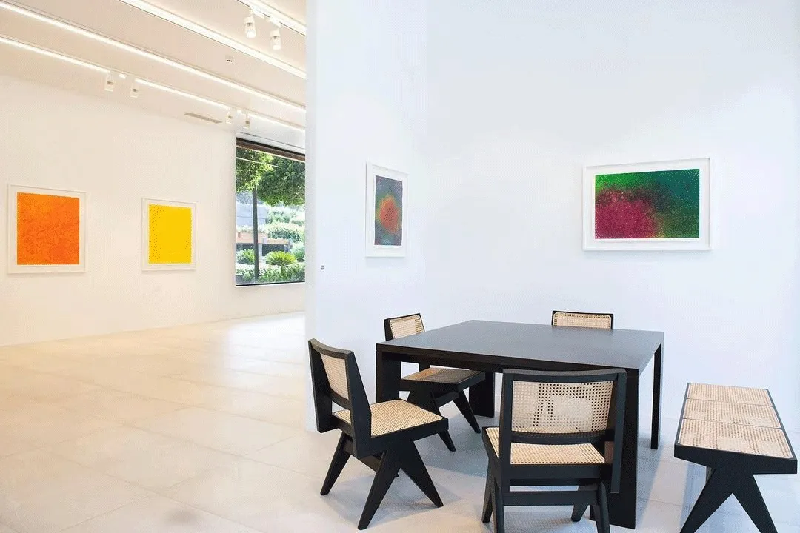
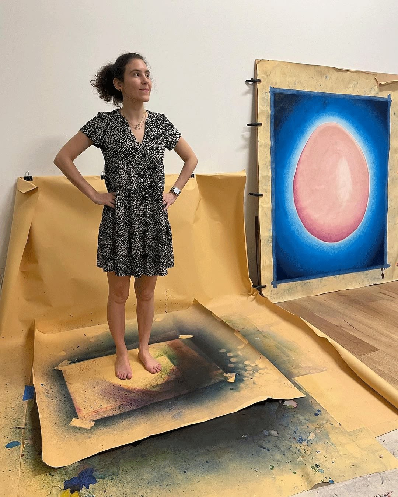

<!doctype html><html lang="tr"><meta charset="utf-8"><meta name="viewport" content="width=device-width,initial-scale=1"><title>EFSUN ERKILIÇ, CONTEMPLATION OF COLORS - Installation Views | PILEVNELI</title><style>body{margin:0;background:#f6f5f1;color:#1d2327;font:16px/1.6 system-ui,sans-serif}main{max-width:1100px;margin:auto;padding:36px 28px}a{color:#244e8b}h1{font-size:32px;line-height:1.25}img{max-width:100%;height:auto}nav,.notice{padding:14px 20px;background:white;border:1px solid #ddd;border-radius:8px;margin:0 0 24px}nav{display:flex;gap:24px;flex-wrap:wrap}.records_list ul{list-style:none;padding:0;display:grid;grid-template-columns:repeat(auto-fit,minmax(260px,1fr));gap:24px}.records_list li{background:white;padding:16px}.image img{max-height:600px;object-fit:contain}.clear{clear:both}button,input,select{font:inherit;padding:9px 14px;border:1px solid #bbb;border-radius:6px}button{cursor:pointer;background:white}small{color:#667}table{width:100%;border-collapse:collapse}td,th{text-align:left;padding:10px;border-bottom:1px solid #ddd}.tag{font-size:12px;border-radius:5px;padding:3px 8px;background:#e5ebe5}pre{white-space:pre-wrap}</style><main><nav><a href="../arsiv.html">← Arşiv dizini</a><a href="https://web.archive.org/web/20220124160032/https://www.pilevneli.com/exhibitions/47-efsun-erkilic-contemplation-of-colors-pilevneli-mandarin-oriental-bodrum/installation_shots/">Wayback kopyası</a><a href="../texts/b407ad9700649f03.txt">Düz metin</a></nav><h1>EFSUN ERKILIÇ, CONTEMPLATION OF COLORS - Installation Views | PILEVNELI</h1><div class="content_alt clearwithin" id="content">
<div class="subsection-installation">
<div class="records_list image_list grid_dynamic_layout_exhibitions_installation collapse_single_column clearwithin">
<ul class="clearwithin">
<li class="item" data-record-type="image_standalone">
<a href="https://web.archive.org/web/20220124160032/https://www.pilevneli.com/exhibitions/47/installation_shots/image_standalone3350/">
<span class="image"><span>

</span></span>
</a>
<div class="fancybox-caption hidden">
</div>
</li>
</ul>
</div>
</div>
<div class="related_artists_container">
<div class="divider inner"></div>
<div class="related_items_panel clearwithin" id="related_artists">
<h3>RELATED ARTIST</h3>
<div class="records_list mini_list">
<ul>
<li>
<a href="fa64230c12f6a3bb.html">
<span class="icon"><span>

</span></span>
<div class="content"><h2>EFSUN ERKILIÇ</h2></div>
</a>
</li>
</ul>
</div>
</div>
</div>
<div class="back_to_link">
<div class="divider inner"></div>
<div class="link"><a href="https://web.archive.org/web/20220124160032/https://www.pilevneli.com/exhibitions/past/">BACK TO PAST EXHIBITIONS</a></div>
</div>
</div></main></html>